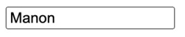

React est une bibliothèque JavaScript développée par Facebook et maintenue dans le cadre du programme Facebook Open Source.
React est considéré comme un framework JavaScript MVVM, comme on l'a vu un peu plus tôt. C'est un outil qui peut être utilisé pour construire des applications de type MPA ou SPA, bien qu'il soit pensé avant tout pour permettre le développement de SPA.
Pour parler plus en détails de ce fonctionnement, React permet de créer un binding unidirectionnel des données vers le DOM. Voyons tout de suite comment afficher une variable dans le HTML.
See the Pen Untitled by OpenSpirit (@OpenSpirit) on CodePen.
Cette syntaxe permet de lier la variable pageTitle à notre DOM en l'incluant dans la balise h1 : c'est ce qu'on appelle une interpolation de variable. On voit que le binding est unidirectionnel (one-way data-binding), c'est-à-dire que la variable impacte le DOM (le contenu de la variable est ajouté au DOM), mais une modification du DOM (comme le fait de supprimer la balise h1) ne changera pas le contenu de la variable.
Il est également possible de créer un binding bidirectionnel (two-way data-binding). Imaginons par exemple une variable firstname et un champ de texte qui permettrait d'éditer cette variable.
See the Pen Untitled by OpenSpirit (@OpenSpirit) on CodePen.
Le champ de texte est vide pour le moment. Commençons par créer un binding unidirectionnel pour lier la variable firstname à l'input et pouvoir afficher son contenu en valeur par défaut du champ.
See the Pen Untitled by OpenSpirit (@OpenSpirit) on CodePen.
On remarque qu'on utilise la même syntaxe que pour l'interpolation, avec des accolades. Mais, cette fois-ci, c'est pour injecter le contenu d'une variable dans un attribut d'un élément HTML, comme la value de notre input.
À ce stade, si nous modifions manuellement le contenu de l'input, les modifications ne seront pas répercutées sur la variable. Pour cela, nous devons créer une seconde liaison, le two-way data-binding. Nous allons écouter les modifications du champ de texte : pour cela, nous nous servirons de l'attribut onChange, qui va permettre l'ajout de l'événement JavaScript change sur notre élément input.
See the Pen Untitled by OpenSpirit (@OpenSpirit) on CodePen.
Nous déclenchons dans notre événement onChange la fonction handleChange, qui va automatiquement contenir l'objet correspondant à l'événement. Nous avons créé cette fonction handleChange, qui va prendre en paramètre l'événement et qui assigne la nouvelle valeur contenue dans le champ (récupérée grâce à event.target.value) dans la variable firstname.
Cet exemple permet de comprendre le fonctionnement du data-binding en React, mais le code présenté ci-dessus n'est pas tout à fait correct. Nous verrons un peu plus tard comment remplacer la déclaration de la variable firstname et l'assignation de la nouvelle valeur dans la méthode handleChange pour obtenir un code valide.
Ce mécanisme de data-binding est au cœur du fonctionnement de React et il est important de comprendre ce modèle, qui diffère fortement des frameworks comme jQuery, qui permet d'accéder directement au DOM. Ici, c'est React qui contrôle cette liaison.